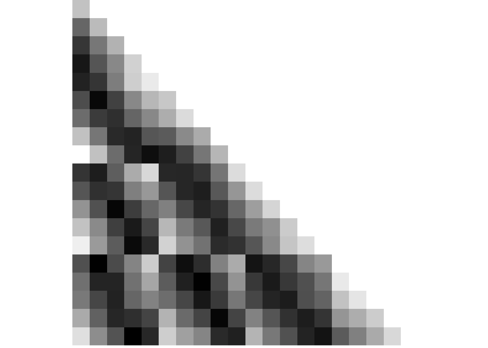

3 Illustrations of Task Design and Analysis Logic
3.1 Day Learning Task Design
Here is a description of the design of the Day Learning Task from the methods section:
In this task, 20 of the 21 scenes, which were shown in the picture viewing tasks, were presented repeatedly. This time, however, they were grouped into multiple sequences introduced to participants as “virtual days”. There were four different sequences, each comprising 5 events. Events from the same sequence were always shown in a specific order and with a specific time delay between them. Scenes were on screen for 1.5 s. At the end of each sequence, an image of a moon was shown for 5 s, then the next sequence began. Every sequence was presented 7 times. There were 7 mini-blocks in this task. Within each of these, every sequence was presented once. At the end of a mini-block, a 30-s break followed, then the next block started. The order in which the sequences were presented differed randomly across the 7 mini-blocks.
We instructed participants that the scenes depicted events from the life of a family and that the sequences of event images corresponded to different days in the family’s life. Participants were asked to memorize which events made up the different sequences (Figure 1C). We further instructed them to learn when during the respective sequence each event occurred. Specifically, we asked participants to learn event times relative to a virtual clock. This clock was running hidden from participants and event images were shown whenever the hidden clock reached the specific event time (Figure 1C, Supplemental Figure 2AB). The task was devised such that participants had to rely on their experience of passing real time and mnemonic construction to infer the times of events.
Specifically, to give participants an indication of virtual time, the hidden clock was made visible 6 times for every presentation of a sequence: once before the first event, once in between successive events, and once after the last event. Participants received no cues about elapsing real time, but had to use their experience of passing real time between virtual time cues to infer the event times relative to the hidden virtual clock. Importantly, the exposure of the hidden clock occurred at random times for each sequence presentation (Supplemental Figure 2CD), with the constraint that it could not be revealed closer than 2 s to a preceding or subsequent event. Thus, participants saw different time cues in each repetition of a sequence. For example, while a specific event always happened at the same virtual time, e.g. 2:07 p.m., the virtual clock could be exposed at any time before the event, e.g. corresponding to 1:32 p.m. in the first repetition of the sequence, and corresponding to 1:17 p.m. in the second repetition. Because true event times were never revealed, participants could not exclusively rely on associative learning to solve the task. Time cues were visible for 1.5 s, but displayed only the time at the start of exposure, i.e. the displayed time did not change within the duration of its presentation.
In short, participants had to combine their experience-based estimates of passing time with the time cues provided by the exposures of the otherwise hidden clock to infer the time at which each event in each sequence took place. Crucially, we varied the speed of the hidden clock between sequences in an effort to partly dissociate real time (in seconds) from virtual time (in virtual hours). Thus, for two sequences more virtual time passed in a comparable amount of real elapsing time (Figure 1C, Supplemental Figure 2). Correlations between the linearly increasing time metrics are inevitably high (Pearson correlation of virtual time with order r=0.969 and virtual time with real time r=0.975). Still this manipulation allowed us to determine using multiple regression whether virtual time explained constructed event times when competing for variance with real elapsed time and event order and whether hippocampal pattern similarity changes related to temporal distances in virtual time beyond ordinal distances and real time distances. Regression models including collinear predictor variables do not result in biased parameter estimates96,97.
Let’s illustrate some features of the design.
First we need to load the data from the design files. These contain the virtual time (in virtual hours) for each event of each day and the scanner time (in seconds) since the time of the day start.
day_id <- rep(1:n_days, each = n_events_day)
design_tbl <- tibble(day_id)
# load design file with virtual time
fname <- here("data", "behavior", "design", "daysTime.txt")
csv_txt <- read.csv(fname, header = FALSE)
design_tbl$virtual_time <- c(t(as.matrix(csv_txt)))
# load design file with event times in seconds (after day start), i.e. real time
# this is the scanner time
fname <- here("data", "behavior", "design", "daysTimeS.txt")
csv_txt <- read.csv(fname, header = FALSE)
design_tbl$scanner_time <- c(t(as.matrix(csv_txt)))
# scanner time relative to first image
design_tbl$rel_scanner_time <- c(
design_tbl$scanner_time[1:5] - design_tbl$scanner_time[1],
design_tbl$scanner_time[6:10] - design_tbl$scanner_time[6],
design_tbl$scanner_time[11:15] - design_tbl$scanner_time[11],
design_tbl$scanner_time[16:20] - design_tbl$scanner_time[16])Here are some plots to show some features of the design.
Events in virtual and real time
This plot shows an overview of the design. We have 4 virtual days with 5 events each. The times of these events are shown based on different metrics:
- The scanner time since the presentation of the first day of an event (global x-axis)
- The virtual hours of each days (separate x-axis for each row)
In combination, you can see that across days different amounts of virtual time pass for a given amount of scanner time.
# time labels in virtual hours rather than decimals
design_tbl$virtual_hours <- sprintf("%02.0f:%02.0f",
floor(design_tbl$virtual_time),
60*(design_tbl$virtual_time-floor(design_tbl$virtual_time)))
# create a new dataframe to use for plotting virtual time axes
virt_h_df <- tibble(x = c(rep(-5,4), rep(65,4)))
virt_h_df$y <- rep(1:4,2)
# create a new dataframe to use for plotting virtual time axes tick marks
tick_df <- tibble(x = rep(design_tbl$rel_scanner_time, each=2))
tick_df$y <- c(0.75, 0.8) + rep(design_tbl$day_id, each=2) -1
tick_df$grp <- rep(1:20, each=2)
tick_df$day <- rep(1:4, each=10)
# initialize the plot
ggplot(design_tbl, aes(x = rel_scanner_time, y = day_id, group = day_id)) +
# plot line for each day
geom_line(size = 1, colour = "darkgrey") +
# add points for the data
geom_point(aes(fill = virtual_time), colour = "darkgrey",
size = 2, stroke = 0.5, shape = 21) +
# plot line for each day that will become virtual time axis
geom_line(data = tick_df, aes(x = x, y = day-0.2, group = day),
size = 0.5, colour = "black") +
# extend the axes beyond the events
geom_line(data = virt_h_df, aes(x = x, y = y-0.2, group = y),
size = 0.5, colour = "black", linetype = 3) +
# add tick marks
geom_line(data = tick_df, aes(x = x, y = y, group = grp),
size = 0.5, colour = "black") +
# add labels with virtual hours
geom_label(aes(x = rel_scanner_time, y = day_id-0.45), size=6*0.352777778,
label = design_tbl$virtual_hours, fill = "#D1D3D4", label.size = 0,
label.padding=unit(0.5, "mm"), family=font2use) +
# set the x- and y-axis range and ticks
scale_x_continuous(limits = c(-7,68.5), breaks=seq(0,65,10)) +
scale_y_continuous(limits = c(0.3, 4.1), breaks=seq(1,4,1)) +
scico::scale_fill_scico(begin = 0.1, end = 0.7, palette = "devon") +
# set plot title, legend and axis labels
labs(x = "seconds since first event", y = "day") +
# make it pretty
theme_cowplot() +
theme(legend.key = element_rect(fill = "transparent", colour = "transparent"),
text = element_text(size=10, family = font2use),
axis.text = element_text(size=8),
legend.text=element_text(size=8),
legend.title=element_text(size=8),
axis.ticks = element_line(colour = "black", size = 0.5),
axis.line = element_line(colour = 'black', size = 0.5),
legend.position = "none")Events in virtual time
Two of the virtual days were short, ranging from 8am to 8pm, and two of the days were long, lasting from 6am until midnight. This can easily be seen if we plot the events in virtual time.
# initialize the plot
sfiga <- ggplot(design_tbl, aes(x = virtual_time, y = day_id, group = day_id, fill = virtual_time)) +
# plot line for each day
geom_line(size = 1, colour = ultimate_gray) +
# add points for the data
geom_point(aes(fill = virtual_time), colour = ultimate_gray,
size = 2, stroke = 0.5, shape = 21) +
# change color
scico::scale_fill_scico(begin = 0.1, end = 0.7, palette = "devon") +
# set the x-axis range and ticks
scale_x_continuous(limits = c(6,24), breaks=seq(6,24,3)) +
scale_y_continuous(limits = c(0.5, 4.2)) +
# set plot title, legend and axis labels
labs(x = "virtual time", y = "day") +
# make it pretty
theme_cowplot() +
theme(legend.key = element_rect(fill = "transparent", colour = "transparent"))
sfiga
Events in real time
In an effort to dissociate real time (in seconds) from virtual time (in virtual hours), both the long and short days were presented within the same actual time span, i.e. around 60 seconds from the first to the last event. In effect, the hidden clock was running faster for the long days than for the short days.
If we plot the scanner time relative to the presentation of the first event picture of a given day it becomes obvious that for two pairs of days the respective scanner time elapsing between events is almost identical.
# initialize the plot
sfigb <- ggplot(design_tbl, aes(x = rel_scanner_time, y = day_id, group = day_id, fill = virtual_time)) +
# plot line for each day
geom_line(size = 1, colour = ultimate_gray) +
# add points for the data
geom_point(aes(fill = virtual_time), colour = ultimate_gray,
size = 2, stroke = 0.5, shape = 21) +
# change color
scico::scale_fill_scico(begin = 0.1, end = 0.7, palette = "devon") +
# set the x-axis range and ticks
scale_x_continuous(limits = c(-10,70), breaks=seq(-10,70,10)) +
scale_y_continuous(limits = c(0.5, 4.2)) +
# set plot title, legend and axis labels
labs(x = "seconds since first event", y = "day") +
# make it pretty
theme_cowplot() +
theme(legend.key = element_rect(fill = "transparent", colour = "transparent"))
sfigb
Correlations of virtual time with order and real time
Correlation of virtual time and order: Pearson r=0.969
Correlation of virtual time and real time: Pearson r=0.975
Correlation of order and real time: Pearson r=0.991
Time cues in virtual and real time
Let’s further illustrate the design for one randomly chosen example subject by plotting the time cues. The virtual times of events were identical for all participants, but the times cues differed between participants.
Prepare the data by loading the logfile from the day learning task and creating a long design table.
set.seed(7)
i_sub <- sample(subjects,1)
# create a long version of the design table by repeating each row 7 times,
# i.e. once for each repetition
design_tbl_long <- design_tbl %>%
dplyr::slice(rep(1:n(), each = 7)) %>%
mutate(rep = rep(c(1:7), n_days*n_events_day),
day_id = factor(sprintf("day %d", day_id), levels = c("day 4", "day 3", "day 2", "day 1")))
# load the logfile and store as tibble
fn <- file.path(dirs$dlt_log_dir, sprintf("P%s-virtemdata.txt", i_sub))
dlt_log <- read.table(fn)
colnames(dlt_log) <- c('fc_on', 'fc_off', 'cue_start', 'cue_id', 'cue_end',
'vol', 'rep', 'real_time', 'day', 'trial_endtime')
dlt_log <- as_tibble(dlt_log)
# save the time cue log entries for each day and repetition
timecue_log <- dlt_log %>%
group_by(day, rep) %>% # log entries for each of day repetition
mutate(rel_scanner_time = real_time -real_time[2]) %>% # add real time relative to first event
dplyr::slice(seq(1,11,2)) %>% # keep only the odd entries, which are the time cues
ungroup() %>%
mutate(
virtual_time_dec = floor(cue_id)+((cue_id-floor(cue_id))/.6), # virtual time in decimals as in design table
day_id = factor(sprintf("day %d", day), levels = c("day 4", "day 3", "day 2", "day 1"))
)Then let’s plot the events and time cues relative to virtual time, separately for the different repetitions of each day.
# virtual time
sfigc <- ggplot(timecue_log, aes(x=virtual_time_dec, y=rep, group = rep)) +
geom_line(size = 1, colour = ultimate_gray) +
geom_point(shape=18, color="black", size=2) +
geom_point(data=design_tbl_long, aes(x=virtual_time, y=rep, fill = virtual_time),
size = 2, color = ultimate_gray, stroke = 0.5, shape = 21) +
scico::scale_fill_scico(begin = 0.1, end = 0.7, palette = "devon") +
facet_wrap(~day_id, ncol=1) +
scale_x_continuous(limits = c(6,24), breaks=seq(6,24,3)) +
scale_y_continuous(limits = c(0,8), breaks=seq(1,7,1)) +
labs(x = "virtual time", y = "repetition") +
theme_cowplot() +
theme(strip.background = element_blank(), #strip.text = element_blank(),
legend.position = "none")
sfigcLastly, let’s plot the events and time cues in real time relative to the first event of a given day, separately for the different repetitions of each day.
# real time relative to first event of the day
sfigd <- ggplot(timecue_log, aes(x=rel_scanner_time, y=rep, group = rep)) +
geom_line(size = 1, color = "darkgrey") +
geom_point(shape=18, color="black", size=2) +
geom_point(data=design_tbl_long, aes(x=rel_scanner_time, y=rep, fill = virtual_time),
size = 2, color = "darkgrey", stroke = 0.5, shape = 21) +
scico::scale_fill_scico(begin = 0.1, end = 0.7, palette = "devon") +
facet_wrap(~day_id, ncol=1) +
scale_y_continuous(limits = c(0,8), breaks=seq(1,7,1)) +
scale_x_continuous(limits = c(-10,70), breaks=seq(-10,70,10)) +
labs(x = "seconds since first event", y = "repetition") +
theme_cowplot() +
theme(strip.background = element_blank(), #strip.text = element_blank(),
legend.position = "none")
sfigd
Supplemental figure for task design
Now we are ready to compose the figure, which will go to the supplement.
layout = "
AB
CD
CD
CD
CD
CD"
sfig <- sfiga + sfigb + sfigc + sfigd +
plot_layout(design = layout, guides = "collect") &
theme(text = element_text(size=10, family=font2use),
axis.text = element_text(size=8),
legend.text=element_text(size=8),
legend.title=element_text(size=8),
legend.title.align = 0,
legend.position = "right",
legend.justification = "bottom",
legend.key.size = unit(3,"mm")) &
guides(fill = guide_colorbar(title.position = "top",
title.hjust = 0.5)) &
labs(fill = "virtual\ntime") &
plot_annotation(theme = theme(plot.margin = margin(t=0, r=-5, b=-8, l=-5, unit="pt")),
tag_levels = 'A')
# save as png and pdf and print to screen
fn <- here("figures", "sf02")
ggsave(paste0(fn, ".pdf"), plot=sfig, units = "cm",
width = 17.4, height = 17, dpi = "retina", device = cairo_pdf)
ggsave(paste0(fn, ".png"), plot=sfig, units = "cm",
width = 17.4, height = 17, dpi = "retina", device = "png")
Supplemental Figure 2. Design of the day learning task. A. Each of the four virtual days consisted of a sequence of five events. Event sequences are shown in virtual time, i.e. relative to the hidden clock. Less virtual time passes within the bottom two sequences because clock speed was manipulated between sequences. B. Event sequences shown in real time relative to the first event. A comparable amount of real time (in seconds) elapses during each event sequence despite different amounts of virtual time passing. C, D. Sequences in virtual and real time as shown in (A) and (B), respectively, but separately for each of the seven repetitions of each sequence during the learning task. Black diamonds indicate the time cues shown to one randomly chosen example participant during the task. Time cues varied across repetitions and differed across participants.
3.2 Representational Similarity Analysis Logic
To illustrate the logic of the RSA on representational change, let’s create some matrices that will be used in the analysis logic figure of the manuscript.
# some general params
day <- rep(1:4, each=5)
event <- rep(1:5, 4)We start with a random matrix of similarity values in the pre-learning scan. There should be no pattern.
# CREATE AND PLOT NOISE MATRIX FOR PRE-SIMILARITY
pre_sim_mat <- matrix(runif(400, -0.8, 0.8), n_days*n_events_day, n_days*n_events_day)
# make data frame from matrix and add variables for plotting
pre_sim_mat[lower.tri(pre_sim_mat, diag=TRUE)]<-NA
pre_sim_df <- reshape2::melt(pre_sim_mat) %>%
filter(!is.na(value)) %>%
mutate(
day1 = day[Var1],
day2 = day[Var2],
day_comb = sprintf("%d_%d", day1, day2),
same_day = day1==day2)
# plot
fig_pre_sim <- ggplot(data = pre_sim_df, aes(x=Var1, y=Var2, fill=value)) +
geom_tile()+
scale_fill_gradient(low = "white", high="black", na.value = NA,
breaks = range(pre_sim_df$value), labels=c("low", "high")) +
coord_flip(xlim = c(0.5,19.5), ylim = c(20.5,0.5),
expand = FALSE) +
guides(fill=guide_colorbar(title = "similarity", title.position = "top",
title.hjust = 0.5)) +
theme(aspect.ratio = 1,
axis.title=element_blank(),
axis.text=element_blank(),
axis.ticks=element_blank(),
panel.background = element_blank(),
panel.border = element_blank(),
panel.grid = element_blank(),
legend.position = "none",
plot.margin=unit(c(0,0,0,0), units = "cm"))
# save and print
fn <- here("figures", "f3_pre_sim")
ggsave(paste0(fn, ".pdf"), plot=fig_pre_sim, units = "cm",
width = 2, height = 2, dpi = "retina", device = cairo_pdf)
fig_pre_simTo plot the RSA prediction matrix, we generate a matrix that has the pairwise temporal distances between events in its cell. We also generate a similarity matrix that mirrors our effects in the hippocampus, e.g. where similarity increases with distance within a sequence and decreases with distance between sequences.
# CREATE DISTANCE AND IDEALIZED SIMILARITY CHANGE MATRICES
# load design file with virtual time
fname <- here("data", "behavior", "design", "daysTime.txt")
virtual_time <- read_csv(fname, col_names = FALSE, col_types = "ddddd")
virtual_time <- c(t(as.matrix(virtual_time)))
dist_mat <- matrix(NA, n_days*n_events_day, n_days*n_events_day)
change_sim_mat <- matrix(NA, n_days*n_events_day, n_days*n_events_day)
# loop over all pairs of events
for (i1 in 1:20){
for (i2 in 1:20){
# temporal distance for this pair
dist_mat[i1,i2] <- abs(virtual_time[i2]-virtual_time[i1])
# similarity depends on whether we are in the same day or not
if(day[i1]==day[i2]){
change_sim_mat[i1,i2] <- abs(virtual_time[i2]-virtual_time[i1])}
else {
change_sim_mat[i1,i2] <- range(virtual_time)[2]-range(virtual_time)[1]-abs(virtual_time[i2]-virtual_time[i1])}
}
}
# PLOT DISTANCE MATRIX
# remove lower triangle from distance matrix
dist_mat[lower.tri(dist_mat, diag=TRUE)]<-NA
# make data frame from matrix and add variables for plotting
dist_df <- reshape2::melt(dist_mat) %>%
filter(!is.na(value)) %>%
mutate(
day1 = day[Var1],
day2 = day[Var2],
day_comb = sprintf("%d_%d", day1, day2),
same_day = day1==day2)
# plot distance matrix
fig_dist_mat <- ggplot(data = dist_df, aes(x=Var1, y=Var2, fill=value)) +
geom_tile()+
scale_fill_gradient(low = "white", high="black", na.value = NA,
breaks = c(0,4), labels=c("low", "high")) +
coord_flip(xlim = c(0.5,19.5), ylim = c(20.5,0.5),
expand = FALSE) +
guides(fill=guide_colorbar(title = "temporal distance", title.position = "top",
title.hjust = 0.5)) +
theme(aspect.ratio = 1,
axis.title=element_blank(),
axis.text=element_blank(),
axis.ticks=element_blank(),
panel.background = element_blank(),
panel.border = element_blank(),
panel.grid = element_blank(),
legend.position = "none",
plot.margin=unit(c(0,0,0,0), units = "cm")) +
ggforce::geom_mark_rect(aes(group = day_comb, filter = same_day==FALSE),
expand = 0.018, radius = 0,
color=unname(aHPC_colors["across_main"]), fill=NA, size=0.5)+
ggforce::geom_mark_rect(aes(group = day_comb, filter = same_day==TRUE),
expand = 0.018, radius = 0,
color=unname(aHPC_colors["within_main"]), fill=NA, size=0.5)
# save and print
fn <- here("figures", "f3_dist_mat")
ggsave(paste0(fn, ".pdf"), plot=fig_dist_mat, units = "cm",
width = 2, height = 2, dpi = "retina", device = cairo_pdf)
fig_dist_mat
# PLOT SIMILARITY CHANGE MATRIX
# add noise to change similarity matrix (uniform distribution)
change_sim_mat <- change_sim_mat+ matrix(runif(400, -0.4, 0.4), dim(change_sim_mat)[1])
# remove lower triangle from similarity change matrix
change_sim_mat[lower.tri(change_sim_mat, diag=TRUE)]<-NA
# make data frame from matrix and add variables for plotting
change_sim_df <- reshape2::melt(change_sim_mat) %>%
filter(!is.na(value)) %>%
mutate(
day1 = day[Var1],
day2 = day[Var2],
day_comb = sprintf("%d_%d", day1, day2),
same_day = day1==day2)
# plot
fig_sim_change <- ggplot(data = change_sim_df, aes(x=Var1, y=Var2, fill=value)) +
geom_tile()+
scale_fill_gradient(low = "white", high="black", na.value = NA,
breaks = range(change_sim_df$value), labels=c("low", "high")) +
coord_flip(xlim = c(0.5,19.5), ylim = c(20.5,0.5),
expand = FALSE) +
guides(fill=guide_colorbar(title = "similarity", title.position = "top",
title.hjust = 0.5)) +
theme(aspect.ratio = 1,
axis.title=element_blank(),
axis.text=element_blank(),
axis.ticks=element_blank(),
panel.background = element_blank(),
panel.border = element_blank(),
panel.grid = element_blank(),
legend.position = "none",
plot.margin=unit(c(0,0,0,0), units = "cm")) +
ggforce::geom_mark_rect(aes(group = day_comb, filter = same_day==FALSE),
expand = 0.018, radius = 0,
color=unname(aHPC_colors["across_main"]), fill=NA, size=0.5)+
ggforce::geom_mark_rect(aes(group = day_comb, filter = same_day==TRUE),
expand = 0.018, radius = 0,
color=unname(aHPC_colors["within_main"]), fill=NA, size=0.5)
# save and print
fn <- here("figures", "f3_sim_change")
ggsave(paste0(fn, ".pdf"), plot=fig_sim_change, units = "cm",
width = 2, height = 2, dpi = "retina", device = cairo_pdf)
fig_sim_changeLastly, we create a post-similarity matrix, which is the sum of the simulated pre-learning and the similarity change matrix.
# CREATE AND PLOT POST SIMILARITY MATRIX
# post similarity is sum of pre similarity and change similarity
post_sim_mat <- pre_sim_mat + change_sim_mat
# remove lower triangle from similarity change matrix
post_sim_mat[lower.tri(post_sim_mat, diag=TRUE)]<-NA
# make data frame from matrix and add variables for plotting
post_sim_df <- reshape2::melt(post_sim_mat) %>%
filter(!is.na(value)) %>%
mutate(
day1 = day[Var1],
day2 = day[Var2],
day_comb = sprintf("%d_%d", day1, day2),
same_day = day1==day2)
# plot
fig_post_sim <- ggplot(data = post_sim_df, aes(x=Var1, y=Var2, fill=value)) +
geom_tile()+
scale_fill_gradient(low = "white", high="black", na.value = NA,
breaks = range(post_sim_df$value), labels=c("low", "high")) +
coord_flip(xlim = c(0.5,19.5), ylim = c(20.5,0.5),
expand = FALSE) +
guides(fill=guide_colorbar(title = "similarity", title.position = "top",
title.hjust = 0.5)) +
theme(aspect.ratio = 1,
axis.title=element_blank(),
axis.text=element_blank(),
axis.ticks=element_blank(),
panel.background = element_blank(),
panel.border = element_blank(),
panel.grid = element_blank(),
legend.position = "none",
plot.margin=unit(c(0,0,0,0), units = "cm"))
# save
fn <- here("figures", "f3_post_sim")
ggsave(paste0(fn, ".pdf"), plot=fig_post_sim, units = "cm",
width = 2, height = 2, dpi = "retina", device = cairo_pdf)
fig_post_sim